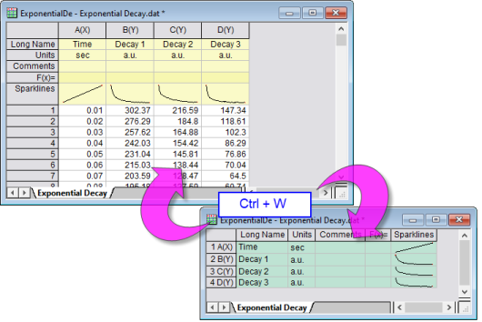
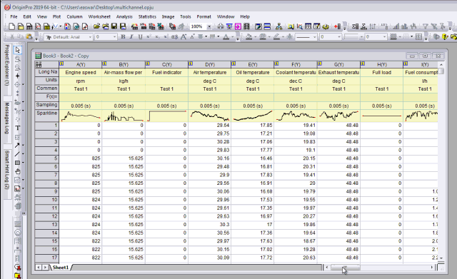
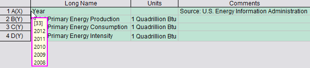
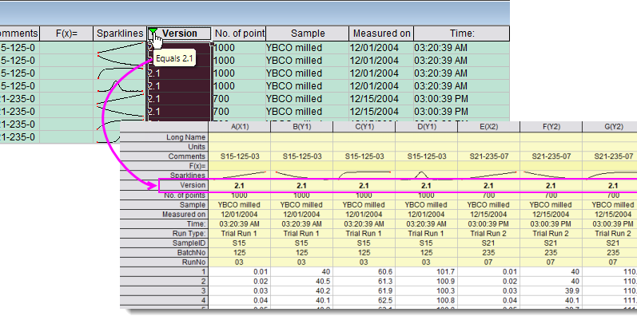

Spaltenlistenansicht
Col-List-View
Ab Origin 2019 unterstützt das Arbeitsblatt die Spaltenlistenansicht. Sie transponiert die Arbeitsblattspalten in eine Liste der Zeilen und zeigt alle Beschriftungszeilen der Quellspalten (Langname, Kommentar, Formel etc.) als Spalten.
- 
- Wählen Sie im Menü Ansicht: Spaltenlistenansicht.
Oder
Hinweis: Wenn das Arbeitsblatt nicht im Ansichtsmodus von 100 % ist, drücken Sie Strg + W und das Blatt wird mit 100 % angezeigt. Wechseln Sie dann zur Spaltenlistenansicht, indem Sie erneut auf das Tastenkürzel drücken. Da einige Anwender durch versehentliches Drücken von Strg + W verwirrt waren und versuchten, durch Drücken von Strg + Z (Rückgängig) ihr Arbeitsblatt wiederherzustellen, haben wir die Möglichkeit hinzugefügt, die Ansicht mit Strg + Z umzuschalten.
- den Schwerpunkt auf die Headerinformationen legen.
- mehr Platz für Header zur Verfügung haben, da die Daten verborgen sind und nur die Header gezeigt werden.
- mehrere Datensätze anzeigen und verwalten, ohne an der horizontalen Scrollleiste zu ziehen, und viel schneller durch eine große Anzahl von Datensätzen (jetzt Zeilen) scrollen.
- schnell die n-te Spalte finden, da der Spaltenindex vor dem Spaltenkurznamen gezeigt wird.
- über die Zeilenauswahl zeichnen und eine Analyse durchführen. Das Kontextmenü (Anwenderparameter hinzufügen, Stil festlegen etc.) funktioniert auch.
- 
 |
Manchmal kann es hilfreich sein, die Form der Daten in einer besonderen Arbeitsblattspalte zu sehen. Wenn die Listenansicht eingeschaltet ist, können Sie diese Daten natürlich nicht sehen. Wenn Sie aber mit der Maus über den linken Rand des Arbeitsblatts fahren, können Sie die Datengröße und die ersten 5 Zeilen der Spalte erkennen.
- 
|
Datenfilter anwenden
Sie können einen Datenfilter auf eine Spalte in der Spaltenlistenansicht anwenden, genauso wie Sie einen Datenfilter auf jede andre Spalte im Arbeitsblatt anwenden. Wenn Sie zur Standardansicht zurückkehren, werden nur die gefilterten Daten im Blatt gezeigt.
- 
|
Anders als bei der Standardansicht des Arbeitsblatts ändert sich das Filtersymbol nicht von grün in gelb, um anzuzeigen, dass der Filter neu angewendet werden muss, wenn die gefilterten Daten in der Spaltenlistenansicht geändert wurden. Wenn Sie die Daten tatsächlich in der Spaltenlistenansicht ändern, stellen Sie sicher, dass Sie auf die Schaltfläche Datenfilter erneut anwenden  auf der Symbolleiste Worksheet-Daten klicken. auf der Symbolleiste Worksheet-Daten klicken.
|